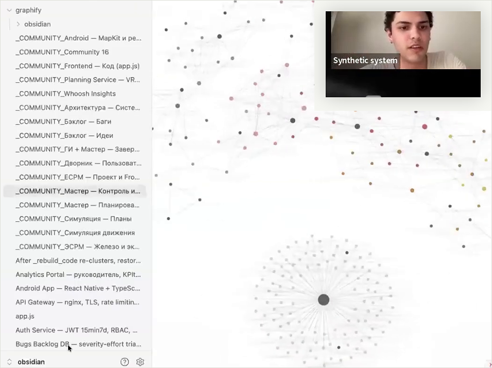

контекст-инжиниринг
новая валюта — не данные, а умение их структурировать. контекст = это данные + структура + осмысление.
baseline / current site structure
мы не “учим пользоваться AI”. мы создаем среду, где люди выходят за рамки промптов, строят осмысленные и глубоко личные системы. превращаем AI в экзоскелет мышления вместе с вами

наш подход
новая валюта — не данные, а умение их структурировать. контекст = это данные + структура + осмысление.
когда AI знает вас — он перестаёт быть инструментом и становится напарником по мышлению.
у нас нет предзаписанного контента. всё рождается в моменте. мы верим в обучение через создание.
мы не гоняемся за инструментами. не верим в идеальные промпты. технологии меняются, а способ мышления остаётся
у нас есть предприниматели, топ-менеджеры, продакты, программисты, дизайнеры, футурологи, авторы популярных медиа из 23-х стран.
экосистема продуктов
сезонные лаборатории раз в квартал, двухнедельные спринты и мастер-классы — три формата для практики AI. от личного контекста до командной операционной системы.
1 квартал = 1 лаборатория на стыке человеческого и машинного. здесь вы не изучаете, а создаёте: персональных ассистентов, AI-first процессы, новую версию себя.
за 2 недели ты создашь Personal Operational System: систему агентов для управления вниманием, задачами и знаниями. от хаоса инструментов к рабочей AI-системе, заточенной под тебя.
агентоцентричные организации. от персонального AI-стека до инфраструктуры всей компании за 3 недели со Степаном Гершуни
практическое AI-сообщество для фаундеров и специалистов. live-demo четверг 18:00 CET, разбор кейсов, нетворкинг, гайды и практики
короткие воркшопы по навыкам: вайб-кодинг, презентации. от идеи до результата за 2 часа.
каждый наш продукт может пройти 3+ человека из команды с решением задач вашей компании.
индивидуальные консультации по AI-стратегии, внедрениям, инструментам и автоматизациям.
что создают участники
не будет никакой магии, кроме той, которую вы создадите сами.
люди из домена всегда знают лучше, чем люди из технологий. выбираешь свою реальную задачу → создаёшь рабочий проект полностью под себя. а мы всегда рядом, чтобы помочь.
самое интересное происходит, когда человек делает то, что считал невозможным.
не десять задач в минуту вместо одной. делать то, что было заблокировано.
кейсы / работы

командная операционная система и агентный контур для реальных процессов.

разбор встреч, задачи и follow-up в одном рабочем пайплайне.

личный AI-контур для практики, внимания и повторяемых сценариев.
люди


FAQ / условия
Выбираешь формат: лаборатория, спринт, space, team track или консультация.
Основной CTA ведёт на join / waitlist и страницы конкретных программ.
Текущий сайт ведёт к реальным страницам лабораторий и отзывам участников.